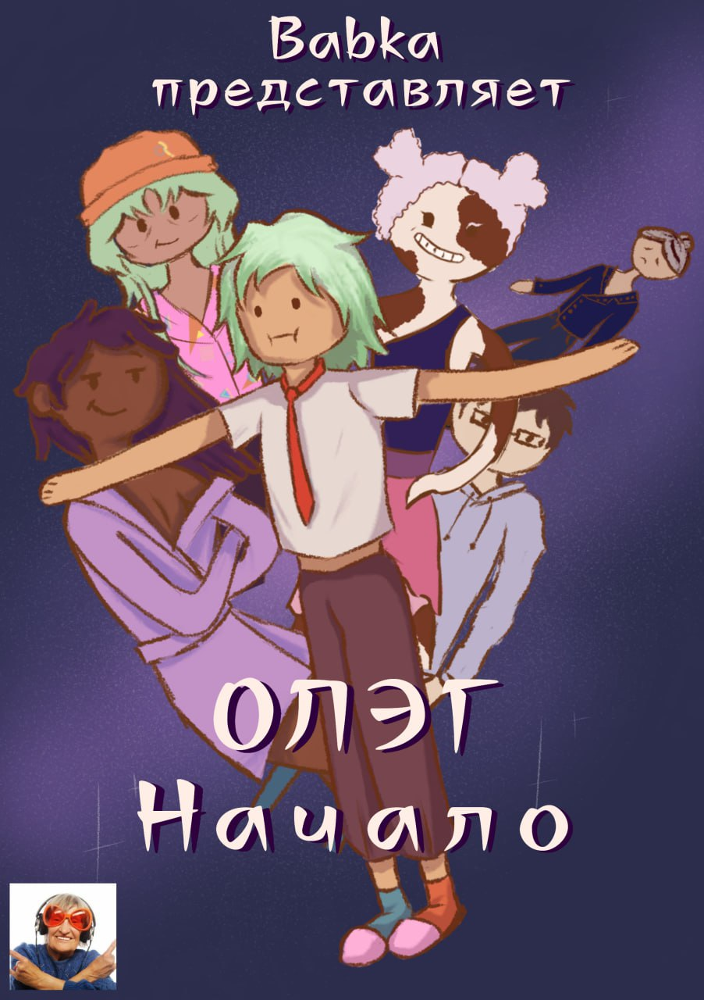
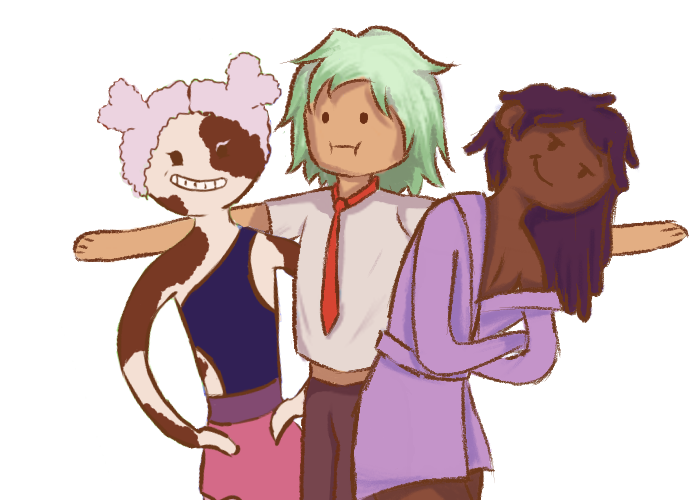

Серия игр Олэг
Серия игр Олэг представляют собой три игры, от трёх разных персонажей. К сожлению, пока готова только одна игра от лица Олега, поэтому это трудно называть серией, но я буду. Эта трилогия о группе друзей, которые проходят через свои wacky приключения, сталкиваясь с раными трудностями на пути.
Персонажи
Геймплей
За Олега
Мир глазами Олега выглядит смешным, неряшливым, как его характер. Дома выглядят совсем не как в реальности, имеют странную форму, необычные двери, цветные окна.
Подробнее
За Дженни
Мир глазами Дженни в пастельных оттенках, с розовым фильтром. Тем не менее, он более реалистичный чем у Олега.
Подробнее
За Эскарпье
Мир глазами Эса наиболее реалистичен, тем не менее, другие персонажи для него выглядят как животные, что отображает его внутреннего ребёнка.
Подробнее
В Олэга планируется добавить:
1
UI для адаптивного экрана в игре.
2
Более качественная графика мира и более открытый мир.
3
Дополнительные предметы и эмоции.
Список предметов, используемых игроком:
- Записная книжка Олега
- Побитый блокнот, который Олэг нашёл на помойке
- Записная книга со списком эмоций, которую Олэг использует для работы
- Брелок-опоссум
- Брелок, который Эскарпье всегда носит с собой.
- Избитый жизнью плюшевый опоссум. Эскарпье подумал, что Олэг его сделал сам и поэтому он такой уродливый, но нет. Олэг нашёл его на помойке и подарил Эске
- Розовые очки Дженни
- Розовые очки, без которых Дженни не выходит на улицу
- Рука из подвала
- Оторванная рука в подвале Дженни. Неизвестно, чья она и существует ли она на самом деле
- Зажигалка Олега
- Он не курит. Но иногда он поджигает мусор и смотрит за тем, как он горит